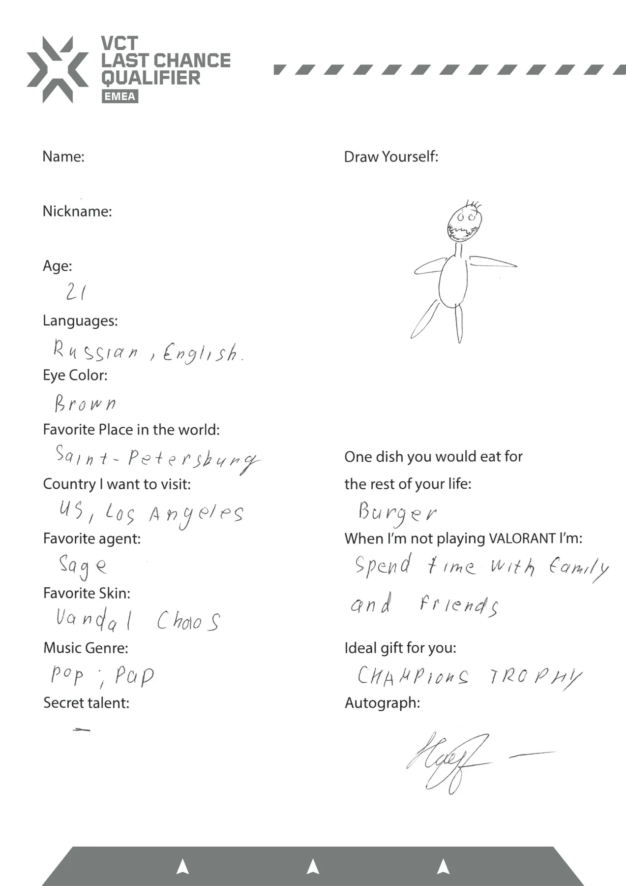
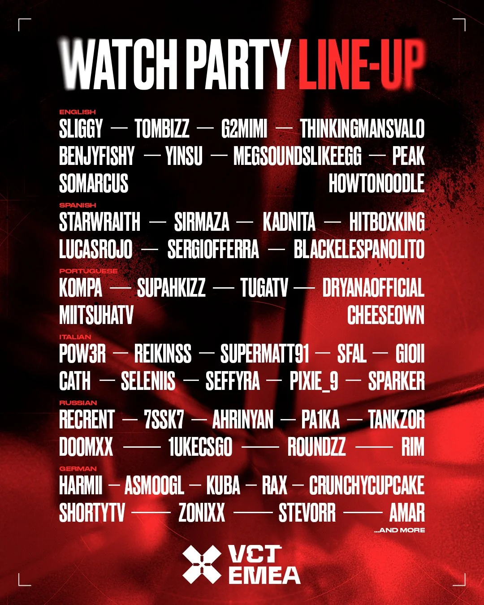

Overview
The always-on series, promos and programmes that carried VCT EMEA through its first partnership season, alongside the tentpole campaigns.
The challenge
A league season runs for months. Between the big moments, the channels needed a steady rhythm of content that grew fandom for teams, players and the competition itself.
My role
As Social Media Strategist, EMEA at Riot Games, I owned the social and creative strategy for VALORANT Esports in the region, connecting audience insight with global brand objectives and taking campaigns from brief to launch to measurement.
Across the slate I set the content strategy and led delivery: briefing and managing agencies and production vendors, building content calendars, running the influencer programme with creators on the ground in the studio, and reporting performance to optimise the mix. On the Game Changers promo, my role was creative input and social campaign planning.
Strategic approach
A content ecosystem with a format for every kind of fan:
- Segment the audienceCompetitive fans, long-time fans, new fans and creators' communities all want different things.
- Assign a format to eachRivalries for the competitive, nostalgia for long-time fans, personality for new ones, creators to bring the league to their own communities.
- Set a rhythmWeekly series between the tentpoles so the channels never go quiet.
- Optimise the mixTrack each format and put more behind what's working.
The slate
Showstopper
Two-to-three-minute films about the rivalries between regions, countries and teams, promoting each week's broadcast.
260K views · ~7K engagements
Ascension promo
A highly abstract promo for Ascension, where tier 2 teams compete for a place in the league. I co-created it with a Madrid-based studio.
50K reach · 2K engagements
First Champs
Reuniting the first-ever VCT champions, from EMEA, in a piece of league history fans could rally behind.
40K reach · 2K engagements
Do It Yourself
A three-episode series.
100K views · ~8K engagements
Talent announcement
An unconventional talent announcement: a video instead of a static graphic, crossing over with the League of Legends LEC studio and talent.
~10K reach · ~700 engagements, above average for this kind of announcement

Admission forms
Players filled in admission forms with personal facts and quirky drawings, inspired by how Formula 1 and other top sports present athletes.
~100K reach · ~6K engagements

Influencer watch parties
Weekly watch parties hosted by creators, plus on-the-ground content with them in the studio.
1M+ reach across hundreds of influencers
Game Changers EMEA promo
Promo film for VCT Game Changers EMEA 2023. My role: creative input and social campaign planning.
2023 partners
- Logitech G
- Aim Lab
- Cougar
- Red Bull
What I delivered
- Showstopper rivalry series
- Ascension promo
- First Champs
- Do It Yourself series
- Talent announcement film
- Player admission forms
- Influencer watch party programme
- Game Changers EMEA promo
Results
1M+
Reach through the influencer programme
260K
Views, Showstopper
100K
Views, Do It Yourself
Per-item figures are shown with each piece above.